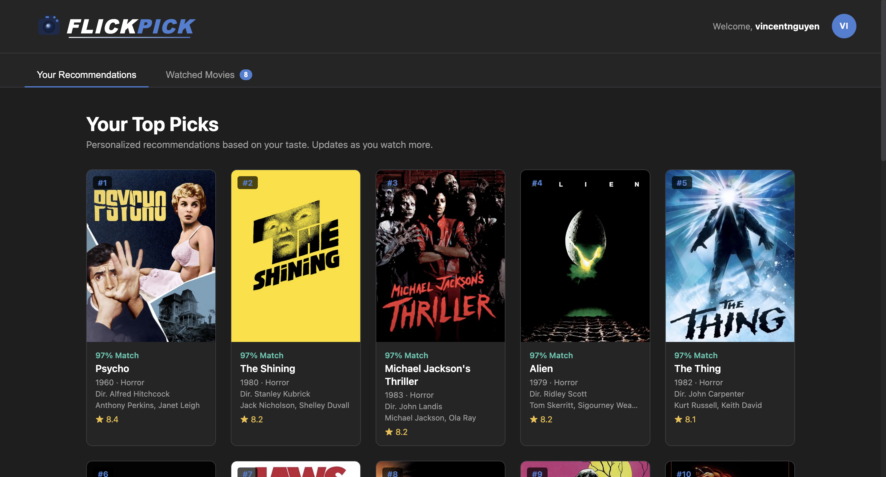
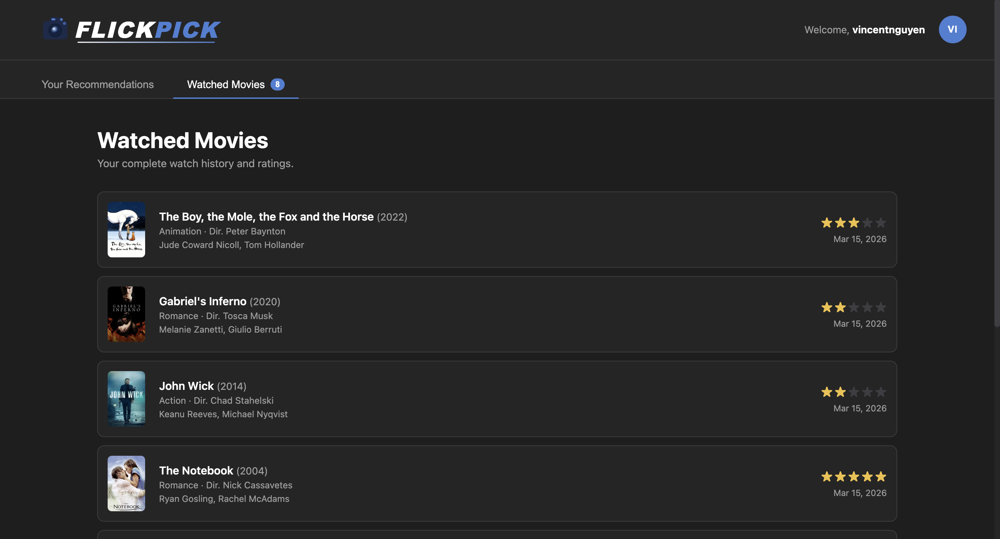
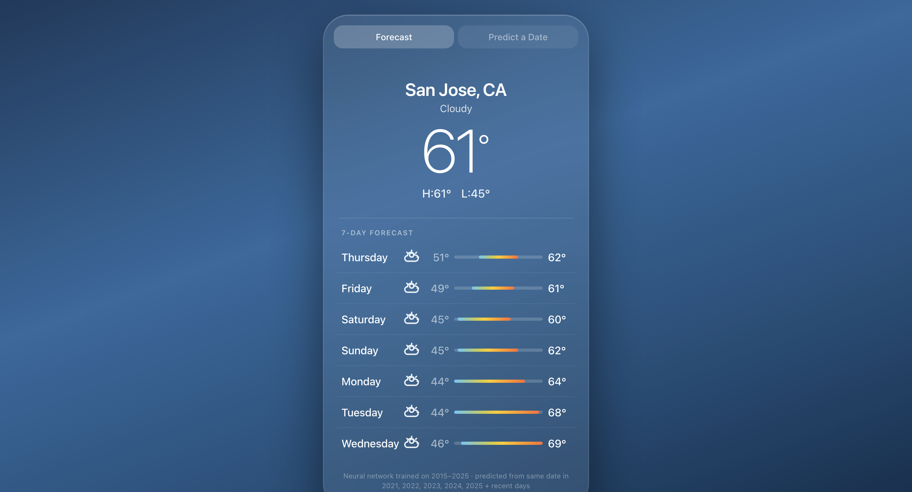
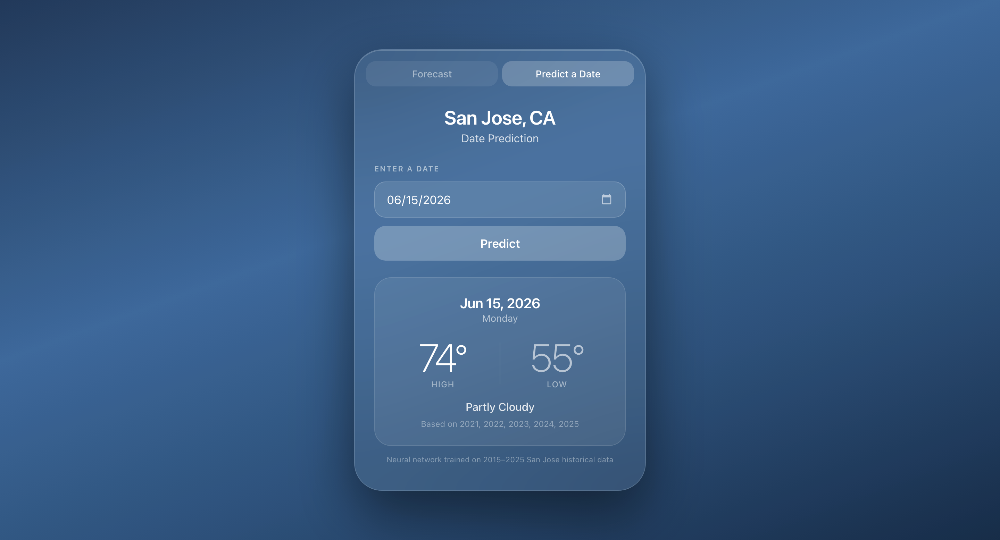

Hi, I'm
CS Student at USC, building full-stack apps and ML systems
I'm a Computer Science student at the University of Southern California (graduating May 2027), passionate about building things that actually work well. My work spans full-stack web development, machine learning, and systems programming — from training PyTorch neural networks to designing normalized database schemas serving 10,000+ daily requests.
Outside of class projects, I run a custom PC building business.
GitHub ProfileFull-stack personalized movie recommendation system with per-user neural network training. Built a RecommenderNet in PyTorch on 12 engineered features, a cold-start onboarding flow across 5 genres seeded from a 200-film TMDB catalog, and a JWT-authenticated Django REST API with watch history and cascading account deletion.
View on GitHub

ML weather app trained on 11 years of NOAA data, achieving 9.6% lower prediction error than baseline (4.90°F vs 5.42°F MAE for highs). Engineered 23 input features capturing seasonal and short-term patterns, served via Django REST API with a glassmorphism-styled React frontend.
View on GitHub

C++ data analysis tool parsing 12 years of UC admissions data across all 9 campuses using custom data structures — no external libraries. Built a multi-tier in-memory database with a custom singly linked list, hand-written CSV parser, and Docker + CMake build system with Matplot++ visualization.
View on GitHub$ ./uc_admissions
Loading 48 CSV files across 9 campuses...
► Parsed 12 years (2012–2023)
► 9 campuses, 200+ majors indexed
Query: UCLA > CS > admit_rate
Year Applied Admitted Rate
─────────────────────────────────
2020 15,421 847 5.49%
2021 17,038 812 4.77%
2022 18,294 803 4.39%
2023 19,102 791 4.14%
$ █
I'm currently open to internship and new grad opportunities. Feel free to reach out.